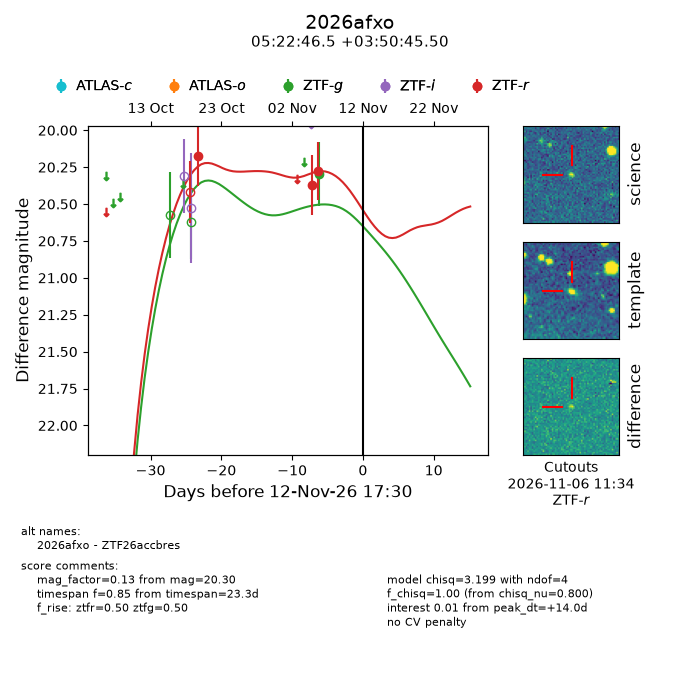
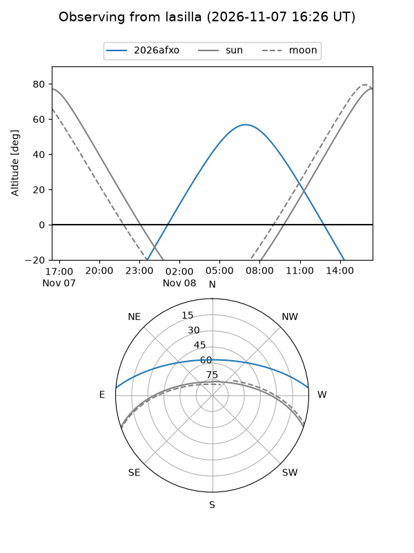
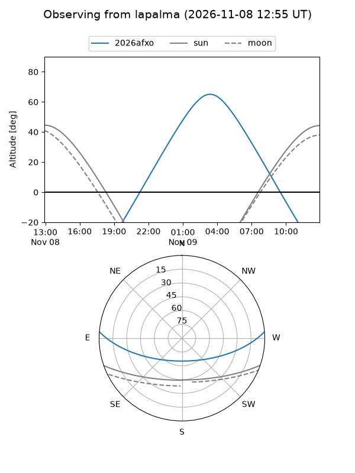
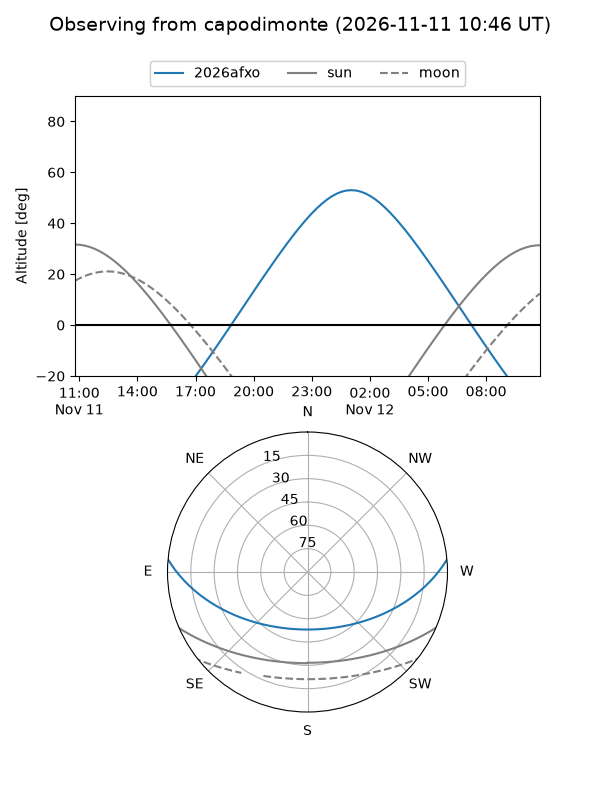
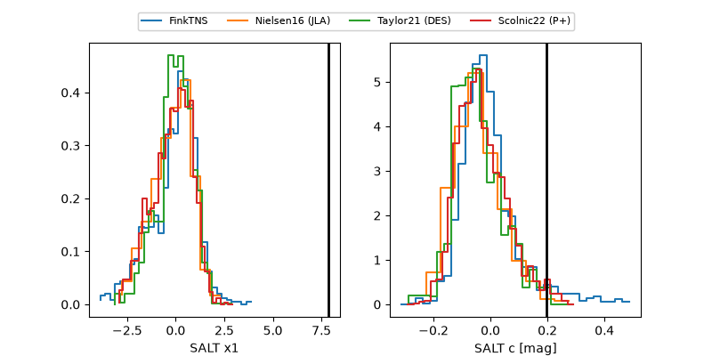

2026afxo
Target 2026afxo at 2026-11-12 17:35
Aliases and brokers:
FINK-ZTF: ztf.fink-portal.org/ZTF26accbres
Lasair-ZTF: lasair-ztf.lsst.ac.uk/objects/ZTF26accbres
ALeRCE-ZTF: alerce.online/object/ZTF26accbres
YSE-PZ: ziggy.ucolick.org/yse/transient_detail/2026afxo
TNS name: wis-tns.org/object/2026afxo
Direct TNS query: direct search
alt names
ZTF26accbres (ztf,fink_ztf)
2026afxo (tns,yse)
Coordinates:
equatorial (ra, dec) = 80.6937,+3.84597
equatorial (HMS+DMS) = 05:22:46.48,+03:50:45.50
galactic (l, b) = (198.8757,-17.72453)
Flags:
peak dt: +14.0
Photometry:
last ztfg=20.30, ztfr=20.27
1 ztfg, 3 ztfr detections
Lightcurve

Visibility



Additional plots
